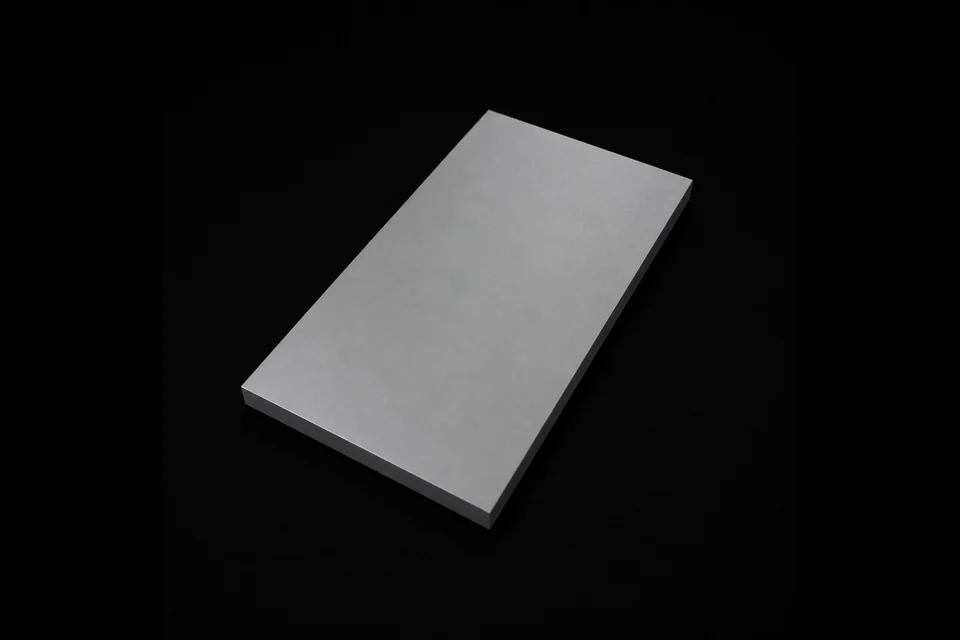

PVD Coating Materials / Sputtering Targets
Aluminium Yttrium Alloy Target
钇铝合金靶
Specifications
| Product Name | Aluminium Yttrium Alloy Target |
|---|---|
| Chinese Name | 钇铝合金靶 |
| Product Line | PVD Coating Materials |
| Category | Sputtering Targets |
| Formula / Composition | Al-Y |
| Purity | 99.9%~99.99% |
| Standard Size | Round Target Dia < 350mm; Rectangular Target Width < 240mm; Rectangular Target Length < 550mm |
| Packaging | 真空包装 |
| Customization | 是 |
Product Features
圆形，方形
원형, 정사각형
Applications
合适比例的钇铝合金溅射形成YAG膜层，主要用于高端OLED/折叠屏IGZO背板掺杂、柔性 TFE 阻隔膜，同时作为半导体高k介质与扩散阻挡层，支撑高世代面板与先进芯片量产。 还可沉积航空发动机高温热障涂层、核电抗腐蚀防护膜、燃料电池电解质及红外激光光学薄膜，覆盖新能源、特种装备与前沿材料研发。
Yttrium-aluminum alloy targets with suitable compositions can be sputtered to form YAG films, mainly for high-end OLED and foldable-screen IGZO backplane doping and flexible TFE barrier films. They are also used as semiconductor high-k dielectric and diffusion-barrier layers for high-generation panels and advanced chip manufacturing. Additional applications include aerospace engine thermal-barrier coatings, nuclear corrosion-resistant protective films, fuel-cell electrolytes, and infrared laser optical films for new-energy, special-equipment, and advanced-material research.
적절한 조성을 가진 이트륨-알루미늄 합금 타겟은 스퍼터링을 통해 YAG 필름을 형성할 수 있으며, 주로 고급 OLED 및 폴더블 화면 IGZO 백플레인 도핑 및 유연한 TFE 배리어 필름에 사용됩니다. 또한 고급 패널 및 첨단 칩 제조를 위한 반도체 high-k 유전체 및 확산 방지층으로도 사용됩니다. 추가 응용 분야에는 항공우주 엔진 열 차단 코팅, 핵 부식 방지 보호 필름, 연료 전지 전해질 및 신에너지, 특수 장비 및 첨단 재료 연구를 위한 적외선 레이저 광학 필름이 포함됩니다.
RFQ Checklist